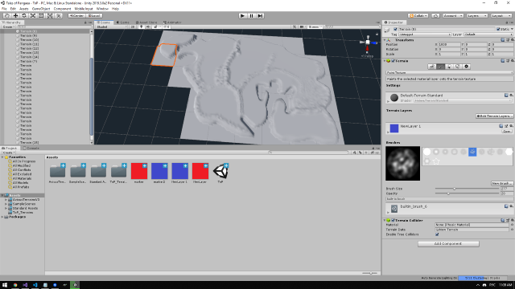

Разработка игр
Да, вы не ослышались. В селе не только бухают, да х*и пинают, здесь живут настоящие программисты, которые пишут свою игру. Наш основной игровой
проект называется Tales of Pangaea, и вы можете почитать о нём на
официальном сайте проекта, о планируемых расах, классах и игровом сюжете.
В игре будет:
- 6 рас: Люди, Эльфы, Дворфы, Орки, Тролли и Нежить
- 7 классов: Воин, Маг, Рейнджер, Разбойник, Колдун, Повелитель зверей и Некромант
- огромный материк Пангея, на котором будет происходить сюжет



Немного смешных релизов
А пока сама игра в разработке, мы предлагаем взглянуть на несколько наших пробных тестов с игровым движком Unity:
- Версия 0.9 — Реализация боя и инвентаря!
- Версия 0.8 — Под водой теперь всё голубое! Добавлено лого, курсор, эффекты камеры в лесу.
- Версия 0.7 — Добавлено управление мышью и меню! И новые баги!
- Версия 0.6 — Впервые реализована вода. Тестирование анимированных деревьев.
- Версия 0.5 — Персонаж больше не дрожит! Также поправлены анимации.
- Версия 0.4 — Впервые добавлено село Ослино. Тестирование LOD и освещения.
- Версия 0.3 — Тестирование локаций, здесь интересный набросок, быстро удалён.
- Версия 0.2 — Персонаж научился ходить, не падая, поправлено управление с клавиатуры.
- Версия 0.1 — Стоит скачать и посмотреть только ради того, чтобы видеть с чего всё начиналось.
Если вы хотите немного помочь в разработке игры, вы всегда можете задонатить бабос в Село Ослино, с указанием
Вашего имени и цели пожертвования, мы обещаем не пропить!